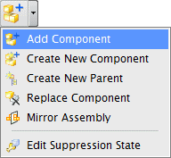
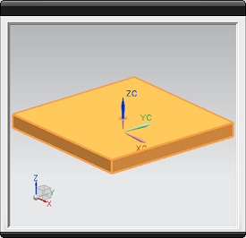
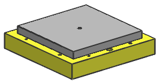

添加工具块到装配中
您将添加工具块组件到装配中的绝对原点。
-
在装配工具条上的组件下拉菜单中，选择添加组件。

-
在添加组件对话框的部件组中，点击打开
 。
。 -
在部件名对话框中，双击部件文件 des03_tool_workpiece。
组件 des03_tool_workpiece 显示在组件预览窗口中。

-
在添加组件对话框中，确保数量是设置为1，且定位是设置为绝对原点。
-
点击应用。

-
在装配导航器中，查看新建装配的结构。
底板和块以组件 的形式被添加到装配中，装配文件旁边带有装配符号
 。
。 xxx_assembly1
xxx_assembly1 des03_tool_baseplate des03_tool_workpiece
des03_tool_baseplate des03_tool_workpiece